ワットプラヤイ
WatPhraYai/Chonburi
バンコクから程近いビーチリゾートの街、チョンブリ県のパタヤ。
例えるならタイの熱海といった雰囲気ですかね。
海はさして綺麗ではなく、大体ビーチには有料デッキチェア（高い！）がビッッッシリと敷き詰められており、とても自由に海で遊べる雰囲気ではないのだが、それでも世界中から色んなモノを求めて旅行者が集まってくる暗黒リゾートの牙城。
特に有名なのがパタヤのオカマちゃん。パタヤ2大ニューハーフショーであるティファニーとアルカザ−ル。
オカマの世界遺産といってもいいでしょう。
そんなパタヤの街を見下ろすように大仏が建っている。
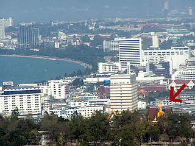
見下ろすといっても目の前には大きなビルが建っているのでパタヤの街から良く見える訳ではない。
従って大仏サイドからは見下ろしているつもりだが、パタヤの街からはあまり相手にされていないような温度差が悲しい。
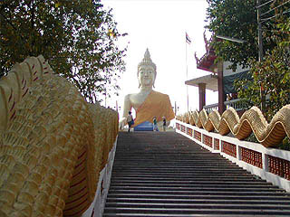 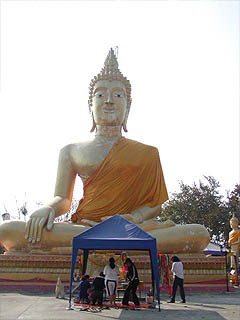
パタヤの街から車で10分程丘陵地を登って行くと目指す大仏さんが見えてくる。
大仏に至る長い階段の両脇には龍が。そして登り切った中央にデーンと大仏が座っている。12メートル。1977年の作。
20メートル以上の大仏さんだと難しいがこのサイズの大仏さんなら衣装を布で作る事も可能である。着せるの大変だろうが。
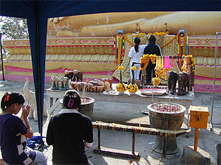
街から比較的近い事もあって、若い娘さん達が参拝に来ていた。
ロウソクに火を灯し、長い線香をあげ、手を合わせ供え物を供えて行く。
熱心な仏教国ならではの美しい光景だ。
えっ？
・・・君達、オカマちゃんじゃないか・・・
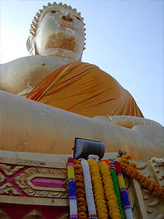
タイでは参拝者の多くがハワイのレイのような小さな花を編んだ飾りを供えて行く。
コレ、何と呼ぶのか知らないが、お寺の境内や近くの屋台などでよく売られている。
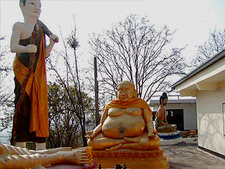 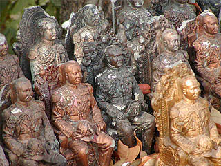
大仏さんを取り囲むように様々な仏像が並んでいる。
中には前の国王さんなのだろうか、凄く偉そうな人の像がたくさん並んでいました。
大仏のある寺から100メートルも離れていないところに中国寺院があったので寄ってみた。
入口には「儒道佛 三聖山」とあった。儒教、道教、仏教ということなのだろう。
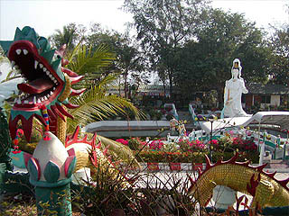
中央に10メートル程の観音像が建っている池を中心にセメント像が渦巻く不思議な寺だ。
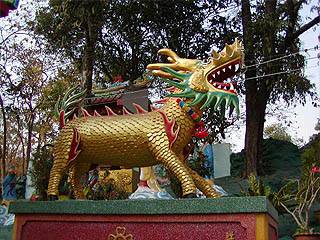 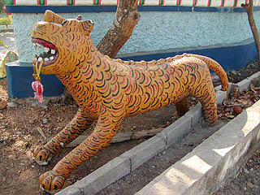
龍、鶴、麒麟、虎などのいかにも中国らしいラインナップ。
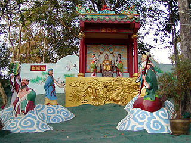
境内ではジオラマ仕立ての儒道佛世界が繰り広がられている。
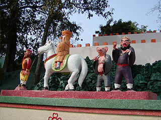 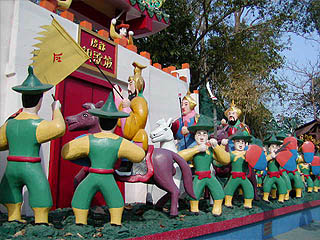
西遊記、三国志的な寓話のジオラマが続く。境内は広くはないが花が咲き、奇麗に手入れされている。
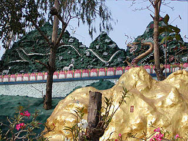
あ、万里の長城だ！
次は地獄だ！
泰国超絶地獄列伝
珍寺大道場 HOME